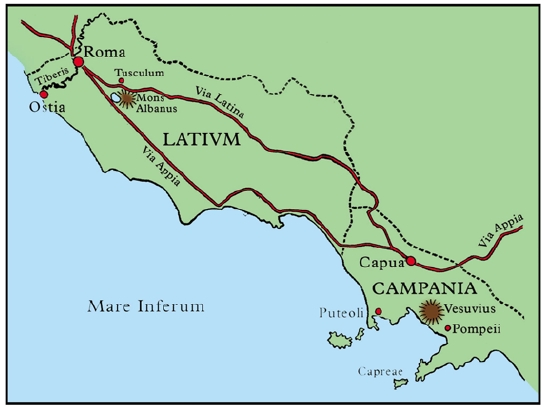

RES RVSTICAE
I
Quid agit pater familiās post merīdiem? Prīmum quiēscit, tum ambulat, dēnique lavātur. Iūlius igitur, postquam paululum quiēvit, ambulātum exit. Iam dēsiit imber, avēs rūrsus in hortō canunt. Dominus hūc illūc in hortō suō amoenō ambulat, deinde exit in agrōs, quī hortum cingunt.
In agrīs frūmentum crēscit vēre et aestāte. Mēnse Augustō frūmentum metitur et ex agrīs vehitur. Deinde agrī arantur et novum frūmentum seritur. Quī agrōs arant ac frūmentum serunt et metunt, agricolae appellantur. Agricola est vir cuius negōtium est agrōs colere.
Agricola arāns post arātrum ambulat. Arātrum est īnstrūmentum quō agrī arantur. Arātor duōs validōs bovēs, quī arātrum trahunt, prae sē agit. Quōmodo frūmentum seritur? Agricola sēmen manū spargit. Ex parvīs sēminibus quae in agrōs sparsa sunt frūmentum crēscit. Mēnse Augustō frūmentum mātūrum est. Quōmodo metitur frūmentum? Falce metitur. Falx est īnstrūmentum quō agricola metit. Quō īnstrūmentō serit agricola? Quī serit nūllō īnstrūmentō ūtitur praeter manum. Quī arat arātrō ūtitur; quī metit falce ūtitur; quī serit manū suā ūtitur.
Deus agricolārum est Sāturnus, quī ōlim rēx caelī fuit, sed ā fīliō suō Iove ē caelō pulsus in Italiam vēnit, ubi eam regiōnem quae Latium appellātur optimē rēxit Latīnōsque, hominēs ut tunc erant rudēs ac barbarōs, agrōs colere docuit. In forō Rōmānō est templum Sāturnī.
Ager quī multum frūmentī aliāsve frūgēs ferre potest, fertilis esse dīcitur. Italia est terra fertilis, sed multa loca Italiae nōn arantur nec ūllās frūgēs ferunt praeter herbam. Iīs locīs ovēs, porcī, bovēs pāscuntur, nam herba est pecoris pābulum, et facilius est pecus pāscere quam agrōs colere. Praetereā lānā ovium ūtuntur hominēs, nam ē lānā vestēs efficiuntur. Itaque pecus maiōris pretiī est quam frūmentum, et quī pecus pāscit plūs pecūniae facit quam quī agrōs colit.
Frūmentum minōris pretiī est, quia magna cōpia frūmentī ex Āfricā in Italiam invehitur. Solum Āfricae fertile est, nisi aquā caret, sed multīs locīs Āfricae parum aquae est. Ergō necesse est agrōs aquā flūminum rigāre. Agricolae quī agrōs prope Nīlum flūmen colunt bis terve in annō metere possunt: Aegyptus enim terra fertilissima est, quia solum eius aquā Nīlī rigātur.
Agrī Iūliī, quī sub monte Albānō sitī sunt, nōn sōlum frūmentum, sed etiam vītēs ferunt. Iī agrī in quibus vītēs crēscunt vīneae dīcuntur. Frūgēs vīneārum sunt ūvae, quae mēnse Septembrī mātūrae sunt. Ex ūvīs mātūrīs vīnum efficitur.
II
Iūlius, quī nūper ex urbe in praedium suum Albānum vēnit, circā agrōs et vīneās suās ambulat. Suprā eum est mōns Albānus; post montem lacus Albānus, quī vīllīs magnificīs cingitur. Nūllā in parte Italiae tot et tantae vīllae sitae sunt quam in Latiō et maximē circā lacum illum amoenum. Nē in Campāniā quidem plūrēs vīllae sunt, quamquam multī Rōmānī in ōrā maritimā eius regiōnis vīllās possident; nam plūrimī Rōmānī sub urbe Rōmā habitāre volunt in vīllīs suburbānīs.
Iūlius aspicit agricolās quī in agrīs et in vīneīs opus faciunt, gaudēns quod ipsī, ut dominō dīvitī, nōn necesse est in agrīs labōrāre. Qumaquam nūllō modō labōrem agricolārum sordidum indignumve esse exīstimat, tamen sē prae agricolūs beātum esse cēnset. Neque enim labōrat dominus, sed quiēscit, cum in praediō suō est. Rūs quiētum et amoenum eum dēlectat. In urbe Iūlius semper in negōtiō est, sed rūrī in ōtiō cōgitat dē negōtiīs urbānīs. Itaque Iūlius, quī ōtium rūris valdē amat, cum prīmum cōnfecta sunt negōtia urbāna, in praedium suum suburbānum proficīscitur.

Agrī Iūliī nōn ā dominō ipsō coluntur, sed ā colōnīs. Colōnus est agricola quī nōn suōs, sed aliēnōs agrōs prō dominō absentī colit et mercēdem dominō solvit prō frūgibus agrōrum.
Colōnī Iūliī sunt agricolae validī quī industriē labōrant omnēsque mercēdem ad diem solvere solent. At hōc annō quīdam colōnus mercēdem nōndum solvit. Iūlius eum colōnum in agrō cōnspicit et “Hūc accēde, colōne!” inquit. Dominus imperat ut colōnus accēdat, tum interrogat: “Cūr noōdum solvistī mercēdem quam ter quaterve iam abs tē poposcī? Octingentōs sēstertiōs mihi dēbēs. Solve eōs!” Iūlius colōnō imperat ut mercēdem solvāt.
Colōnus pallidus prae metū loquī nōn potest.
Iūlius: “Audīsne? Imperō tibi ut mercēdem solvās. Quīn respondēs?”
Colōnus: “Nūlla est mihi pecūnia. Nē assem quidem habeō.”
Iūlius: “Nisi hīc et nunc solvis mercēdem dēbitam, servīs meīs imperābō ut tē agrīs meīs pellant. Iam trēs mēnsēs exspectō ut ea pecūnia mihi solvātur. Etsī vir patiēns sum, hic fīnis est patientiae meae!”
Colōnus ad pedēs dominī sē prōicit eumque ōrat ut patientiam habeat: “Patientiam habē, domine! Nōlī ā mē postulāre ut tantum pecūniae statim solvam! Intrā duōs trēsve mēnsēs omnia accipiēs. Nōlī mē ē domō meā rapere! Octō līberī mihi sunt, quōs ipse cūrāre dēbeō. Cūra īnfantium multum temporis magnamque patientiam postulat, itaque parum temporis habeō ad opus rūsticum.”
Iūlius: “Quid? Num uxor abs tē postulat ut tū prō mātre īnfantēs cūrēs? Itane īnfantēs suōs neglegit? Mātris officium est īnfantēs cūrāre. Tū vērō cūrā ut agrī bene colantur et mercēs ad diem solvātur!”
Colōnus: “Uxor mea officium suum nōn neglegit nec postulat ut ego īnfantēs cūrem; sed nunc nec īnfantēs cūrāre nec quidquam aliud agere potest, quia aegrōtat: intrā paucōs diēs novum īnfantem exspectat. Nōlī mē ab uxōre gravidā rapere! Per omnēs deōs tē ōrō!”
Hīs precibus dominus sevērus tandem movētur. Colōnō imperat ut taceat atque surgat, tum “Quoniam,” inquit, “uxor tua gravida est, abī domum! Prīmum cūrā ut uxor et līberī valeant, tum vērō labōrā ut pecūniam omnem solvās intrā fīnem huius mēnsis, id est intrā trīcēsimum diem!”
III
Colōnō dīmissō, Iūlius alium agricolam vocat eumque dē rēbus rūsticīs rogat, ac prīmum dē vīneīs: “Quōmodo vīneae sē habent hōc annō?”
“Optimē,” inquit agricola. “Aspice hanc vītem: tot et tantae ūvae magnam vīnī cōpiam prōmittunt, ac vīnum bonum futūrum esse exīstimō, nam sōl duōs iam mēnsēs prope cotīdiē lūcet ūsque ā māne ad vesperum. Nihil enim vīneīs magis prōdest quam sōl et calor, nec quidquam iīs magis nocet quam imber et frīgus.”
Iūlius: “Calor sōlis nōn ipse per sē efficit ut vīnum bonum sit. Vītēs probē cūrāre oportet. Itaque vōs moneō ut industriē in vīneīs labōrētis. Sed satis dē vīneīs. Frūmentum quāle erit?”
“Nōn ita bonum,” inquit alter agricola. “Solum nimis siccum est, nec rigārī possunt agrī, quod procul absunt ā rīvō. Imber brevis quem hodiē habuimus frūmentō prōfuit quidem, sed parum fuit. Item sicca est herba, pecus parum pābulī invenit. Sed scīsne ovem herī paene raptam esse ā lupō?”
Iūlius: “Quid? Lupusve ovem ē grege rapuit?”
Agricola: “Ovis ipsa ē grege aberrāverat. Nec vērō lupus ovī nocuit, nam pāstor eam in silvā repperit atque ē dentibus lupī servāvit!”
Iūlius: “Ō, pāstōrem pigerimmum, quī officium suum ita neglēxit! Pāstōris officium est cūrāre nē ovēs aberrent nēve sulvam petant. Ego vērō cūrābō nē ille pāstor posthāc officium neglegat!”
Agricola: “Nōlī nimis sevērus esse! Nōn cēnseō illum pāstōrem prae cēterīs pigrum esse.”
Iūlius: “Rēctē dīcis: nam pigrī ac neglegentēs sunt omnēs! At ego faciam ut industriī sint!”
Agricola: “Certē pāstōrēs minus labōrant quam agricolae. Nōbīs nūllum est ōtium, nec opus est nōs monēre ut industriī sīmus nēve quiēscāmus.”
Iūlius: “Nōlī cēnsēre opus pāstōrum facilius esse. Cūra pecorsi magnum est negōtium, nōn ōtium, ut pāstōrēs nēquam in mollī herbā dormientēs putant. Ego vērō cūrābō nē ille pāstor neglegēns sit nēve dormiat. Faciam ut tergum eī doleat! Aresce eum!”
Sed eō ipsō tempore pāstor gregem prae sē agēns ē campīs revertitur. Cum prīmum is prope vēnit, “Optimē advenīs,” inquit dominus īrātus baculum prae sē tenēns, “nam verbere meruistī!”
Pāstor humī sē prōiciēns dominum ōrat nē sē verberet: “Nōlī me verberāre, ere! Nihil fēcī!”
“At propter hoc ipsum,” inquit Iūlius, “tē verberābō, homō nēquam, quod nihili fēcistī! Officium tuum est cūrāre nē ovēs aberrent nēve ā lupō rapiantur. Precēs tibi nōn prōsunt. Prehendite eum, agricolae, et tenēte!” Iūlius duōbus agricolīs imperat ut pāstōrem prehendant et teneant.
Tum vērō, dum pāstor territus verbera exspectat, ovēs sine pāstōre relictae dē viā in agrōs aberrant ac frūmentum immātūrum carpere incipiunt. Agricolae hoc videntēs clāmant: “Prohibē ovēs tuās ab agrīs nostrīs, pāstor!” — tum pāstōrem mittunt atque celeriter ovēs in agrīs sparsās persequuntur.
Pāstor sōlus cum dominō relictus “Modo dīxistī,” inquit, “meum officium esse cavēre nē ovēs aberrent. Nōlī mē officiō meō prohibēre!”
Iūlius: “Ego tē nōn prohibēbō officium facere. Fac ut ovēs ex agrīs agantur! Age, curre, pāstor!”
Vix haex dīxerat Iūlius cum pāstor quam celerrimē potest ad ovēs suās currit. Dominus rīdēns eum currentem aspicit, tum ad vīllam revertitur. Etsī dominus sevērus exīstimātur, tamen inhūmānus nōn est.
* * *
GRAMMATICA LATINA
Coniūnctīvus. Tempus praesēns
Āctīvum:
Dominus: “Intrā, serve! Claude forem! Tacē et audī!” Dominus servō imperat ut intret, forem claudat, taceat et audiat. Servus intrat, forem claudit, tacet et audit.
‘Intrat’ ‘tacet’, ‘claudit’, ‘audit’ et indicātīvus. ‘Intret’, ‘taceat’, ‘claudat’, ‘audiat’ coniūnctīvus. Coniūnctīvus praesēns (pers. III sing.) [1] -et, [2, 3, 4] -at.
Exempla: [1] cōgitā|re: cōgit|et; [2] respondē|re: responde|at; [3] scrīb|ere: scrīb|at; [4] audī|re: audi|at.
Magister: “Studiōsus estō, discipule! Prīmum audī quod interrogō, tum cōgitā, dēnique surge et respondē!” Magister discipulum monet ut studiōsus sit: prīmum audiat, tum cōgitet, dēnique surgat et respondeat. Discipulus silet. Magister: “Audīsne, puer? Moneō tē ut studiōsus sīs: prīmum audiās, tum cōgitēs, dēnique surgās et respondeās.” Discipulus: “Nōn opus est mē monēre ut audiam et cōgitem atque ut studiōsus sim. Sed respondēre nesciō. Nōlī igitur ā mē postulāre ut surgam et respondeam!”
Magister: “Studiōsus estō, discipule! Prīmum audī quod interrogō, tum cōgitā, dēnique surge et respondē!” Magister discipulum monet ut studiōsus sit: prīmum audiat, tum cōgitet, dēnique surgat et respondeat. Discipulus silet. Magister: “Audīsne, puer? Moneō tē ut studiōsus sīs: prīmum audiās, tum cōgitēs, dēnique surgās et respondeās.” Discipulus: “Nōn opus est mē monēre ut audiam et cōgitem atque ut studiōsus sim. Sed respondēre nesciō. Nōlī igitur ā mē postulāre ut surgam et respondeam!”
Magister: “Studiōsī estōte, discipulī! Prīmum audīte quod interrogō, tum cōgitāte, dēnique surgite et respondēte!” Magister discipulōs monet ut studiōsī sint: prīmum audiant, tum cōgitent, dēnique surgant et respondeant. Discipulī silent. Magister: “Audītisne, puerī? Moneō vōs ut studiōsī sītis: prīmum audiātis, tum cōgitētis, dēnique surgātis et respondeātis.” Discipulī: “Nōn opus est nōs monēre ut audiāmus et cōgitēmus atque ut studiōsī sīmus. Sed respondēre nescīmus. Nōlī igitur ā nōbīs postulāre ut surgāmus et respondeāmus!”
Dēcl. 1 Dēcl. 2, 3, 4
Sing. Plūr. Sing. Plūr.
Pers. 1 -em -ēmus -am -āmus
Pers. 2 -ēs -ētis -ās -ātis
Pers. 3 -et -ent -at -ant
Passīvum:
Dominus imperat ut servus improbus teneātur et verberētur, deinde ut vinciātur et inclūdātur.
Dominus imperat ut servī improbī teneantur et verberentur, deinde ut vinciantur et inclūdantur.
Iānitor tabellārium monet ut caveat nē ā cane mordeātur: “Cavē nē ā cane mordeāris!” Tabellārius: “Tuum negōtium est cūrāre nē ego mordear. Vincī canem! Ego cūrābō ut tū vinciāris et inclūdāris et verberēris ab erō tuō!” Iānitor: “Num tuum negōtium est cūrāre ut ego vinciar et inclūdar et verberer?”
Iānitōrēs tabellāriōs monent ut caveant nē ā cane mordeantur: “Cavēte nē ā cane mordeāminī!” Tabellāriī: “Vestrum negōtium est cūrāre nē nōs mordeāmur. Vincīte canem! Nōs cūrābimus ut vōs vinciāminī et inclūdāminī et verberēminī ab erō vestrō!” Iānitōrēs: “Num vestrum negōtium est cūrāre ut nōs vinciāmur et inclūdāmur et verberēmur?”
Dēcl. 1 Dēcl. 2, 3, 4
Sing. Plūr. Sing. Plūr.
Pers. 1 -er -ēmur -ar -āmur
Pers. 2 -ēris -ēminī -āris -āminī
Pers. 3 -ētur -entur -ātur -antur
* * *
AD CAPITVLVM